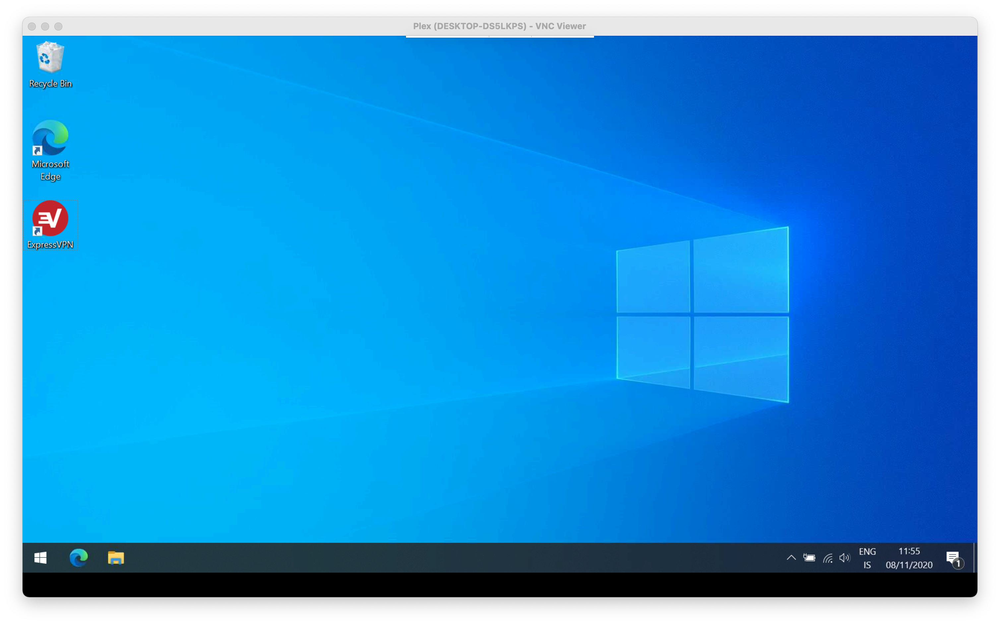
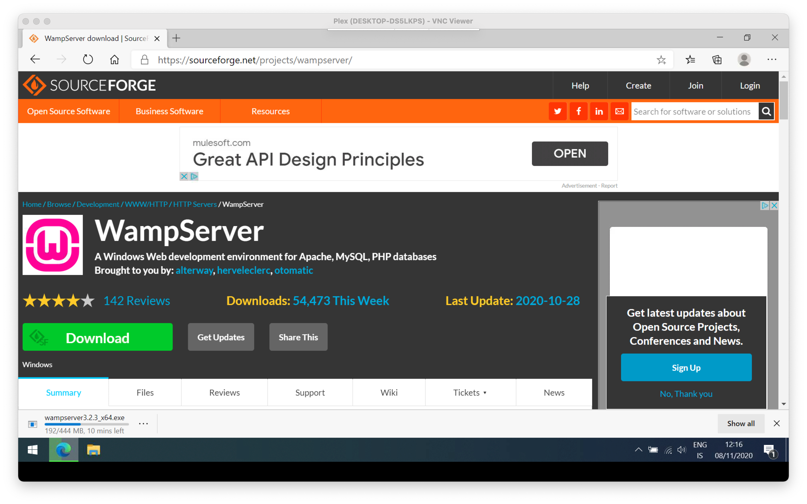
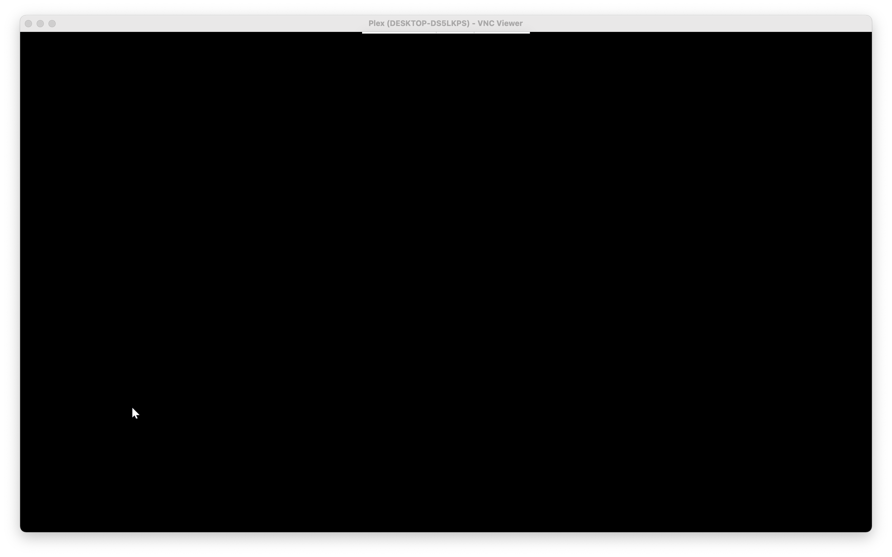

DIY Web Hosting
How to host HTML on your own Windows machine?
Some time ago I bought a cheap Acer laptop for hosting a Plex Server. I keep all sorts of good stuff on an external SSD and access it via VNC Viewer to put even more sweet stuff on that hard-drive. Simply put, it's hugely popular with my household AND friends (who can access it from their own home.)
For the networking assignment I got inspired by this media server of mine. How about hosting a website on my own web server? It ticks all the boxes when it come to learning about HTTPS, DNS, TCP/IP, Web server basic functionality, etc.
So how about digging into this?
Here's my lame ass Windows 10 machine, waiting to be further connected to the outside world ...
For this walkthrough I'll be putting up a simple, plain HTML site. We'll be setting up and WAMP-server. This is an application that bundles together a lot off hosting-essential-stuff, like Apache, SQL, PHP. We won't be using all those features, but may another episode?
First step ... Accessing my computer via remote desktop.
This computer is pretty much vanilla Windows. As you can see, I haven't even installed a browser. Edge works just fine for this and I try not to take up any unnecessary, valuable real estate on my small, local hard-drive.
Second, downloading WAMP. This is the 64-bit version. WAMP's official website does some annoying sign-up bullshit when hitting "Download" so I linked to a file hosted on Sourceforge.
This is sure taking a while to download ... Looks like Sourceforge is doing some serious throttling!
Download finally completed. Let's open up this sucker!
Now, god damn it!
The VNC viewer is giving me a black screen. Probably because I'm running MacOs beta on my primary machine. I guess I'll have to go home and finish this install physically.
Later skater ...
... and we're back, ladies and gentlemen! I tried updating the program, but it was also a no-go. So we're here on the Windows computer itself.
Now I install WAMP. This is a pretty straight-forward thing.